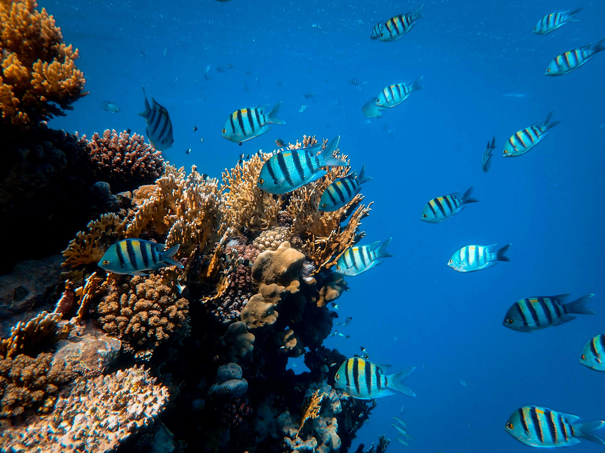

Taniti
Visit a wonderful paradise
Exploring the island is a thrilling adventure, brimming with wonder and endless possibilities that spark the imagination. Learn about our amazing experiences offered at Taniti.


Good to know before visiting Taniti
Questions:
- Are the power outlets in Taniti compatible with those in the United States? Power outlets are 120 volts (the same as in the United States).
- During what hours is alcohol prohibited from being served or sold in Taniti? Alcohol is not allowed to be served or sold between the hours of midnight and 9:00 a.m.
- What is the legal drinking age in Taniti, and how strictly is it enforced? The drinking age on Taniti is 18 and the drinking age is not strictly enforced.
- Do many Tanitians speak English fluently, and where is English less commonly spoken? Many younger Tanitians speak fluent English. Very little English is spoken in rural areas, especially by the older residents.
- How many hospitals and clinics are available in Taniti, and do the hospital staff speak multiple languages? There is one hospital and several clinics. The hospital has many multilingual employees.